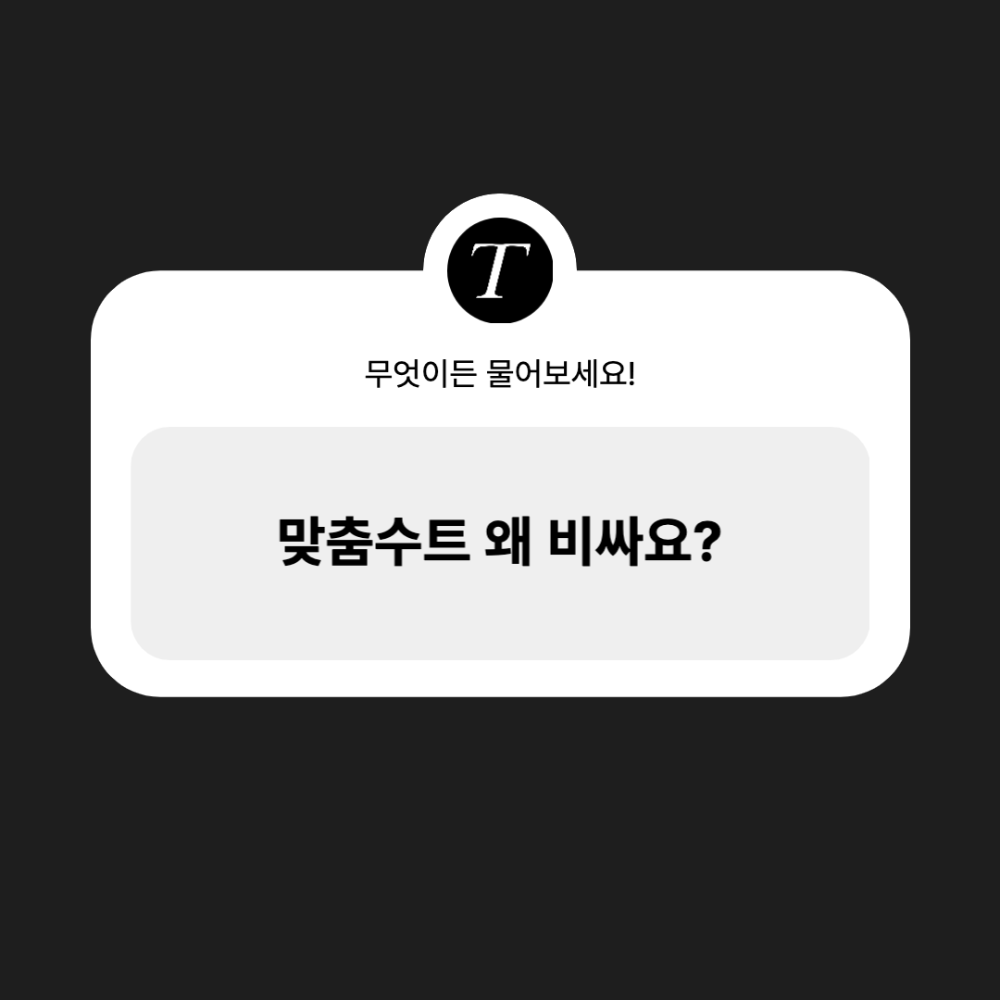
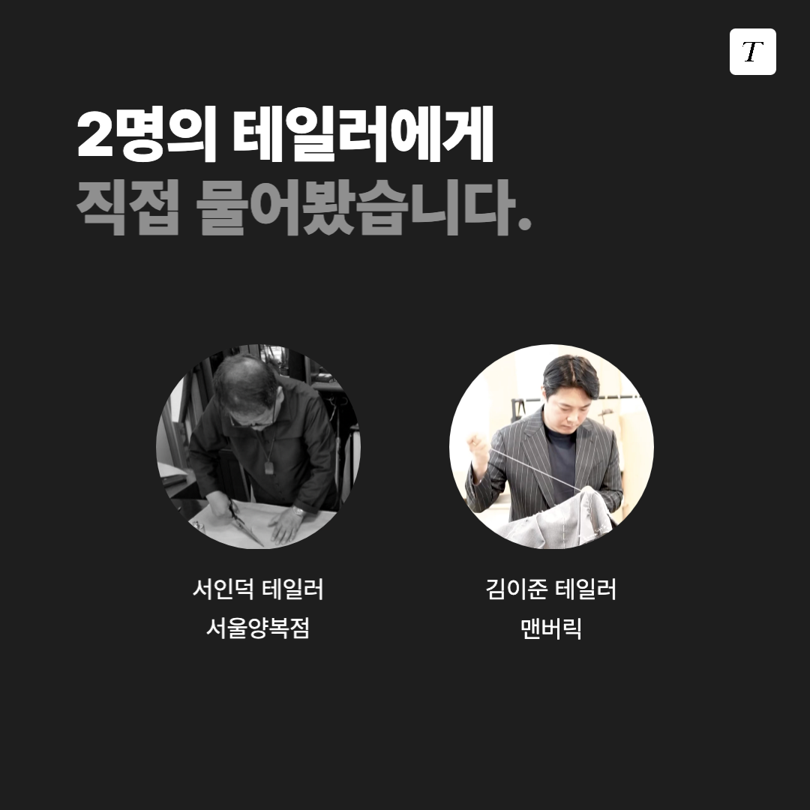
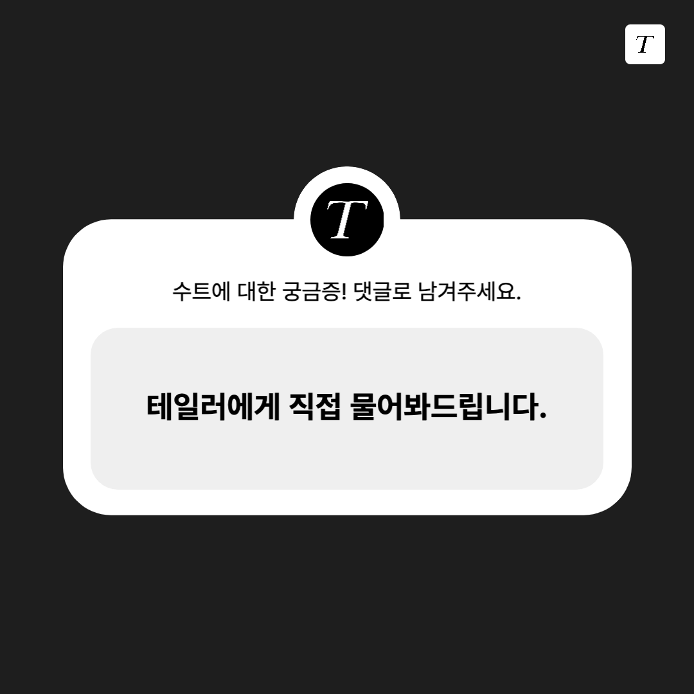
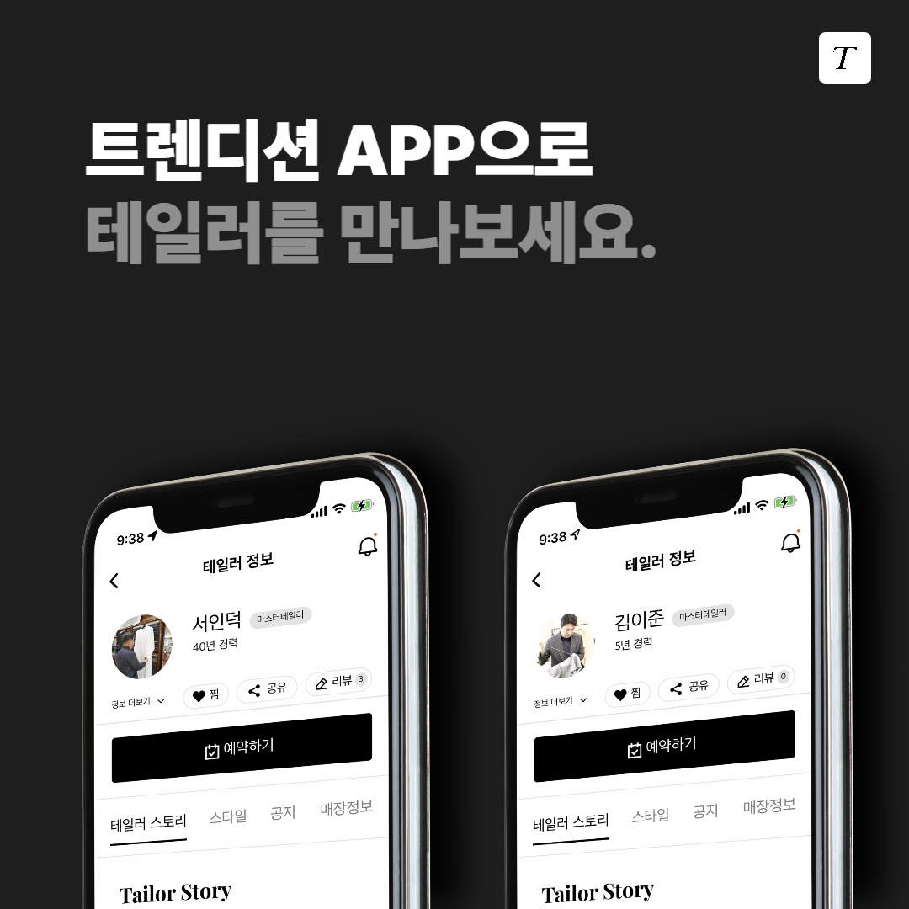

테일러에게 직접 물어봤습니다.
안녕하세요.
평균 40년 경력의 맞춤수트 테일러분들을 연결해 드리는 플랫폼 트렌디션 입니다.
“맞춤 수트, 비싼 것 맞습니다.”
트렌디션에서 판매하는 맞춤수트의 가격은 90만원부터 시작합니다.
원단에 따라 가격은 240만원 이상까지 오르기도 합니다.
* 비스포크 (수제) 기준 90만원 ~
* MTM (반수제) 기준 70만원 ~
----------
맞춤수트가 이렇게 비싼지 모르셨다고요?
백화점에서 파는 수트랑 가격 차이가 너무 난다고요?
그래서 제가 직접 테일러분들께
'맞춤수트는 왜 비싼지' 물어봤습니다.
----------

----------
저 또한 수트 구매를 고려하는 시기가 있었기 때문에 가격이 큰 고민이 된다는 점을 너무나 잘 알고 있었습니다.
----------

----------
그래서, 전국 약 30여명의 맞춤 수트 테일러를 연결해 드리는 맞춤 수트 플랫폼을 운영하는 만큼
2명의 테일러분들께 직접 여쭤봤습니다.
* 서울 양복점 - 서인덕 테일러
* 맨버릭 - 김이준 테일러
----------
----------
영상에 담긴 제작과정, 확인해 보셨나요?
바로 수많은 과정과 손길을 거쳐 만들어지기 때문입니다.
1️⃣ 사이즈를 재고 체형을 분석합니다.
2️⃣ 체형에 맞춰 옷의 설계도(패턴)를 만듭니다.
3️⃣ 패턴 모양에 맞춰 원단을 잘라냅니다.
4️⃣ 가봉을 통해 수정할 부분을 확인합니다.
5️⃣ 손바느질과 봉제 기술로 옷을 만듭니다.
----------
이 모든 과정이 오직 한 사람을 위해 진행되며, 개인의 체형에 맞춰 가장 편안한 옷을 짓기 때문에
원단을 대량으로 자르고 봉제하는 기성복과는 비교할 수 없습니다.
----------

----------
또 다른 수트에 대한 궁금증이 있다면 댓글로 남겨주세요!
30여명의 테일러에게 직접 물어봐드립니다.
----------
더 많은 테일러의 이야기가 궁금하다면?
⬇️ ⬇️
----------
